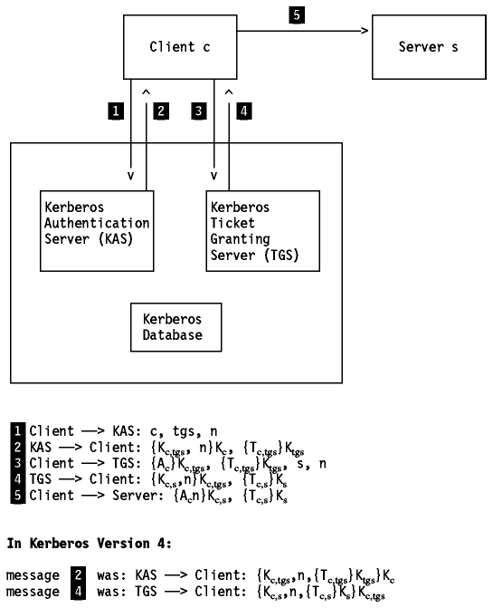
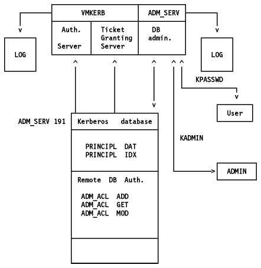

Table of Contents
Table of Contents  DOS
DOSAccording to The Enlarged Devil's Dictionary (Ambrose Bierce), Kerberos is ``the watchdog of Hades, whose duty it was to guard the entrance against whom or what does not clearly appear; Kerberos is known to have had three heads''.
The Kerberos Authentication and Authorization System is an encryption-based security system that provides mutual authentication between the users and the servers in a network environment. The assumed goals for this system are:
The Kerberos system is mainly used for authentication purposes, but it also provides the flexibility to add authorization information.
The current versions of the Kerberos protocol are Versions 4 and 5. Version 4 is widely used and is the version most commonly implemented in commercial products. Version 5 is currently an Internet-Draft. It is based on Version 4 and incorporates a number of new features and improvements.
Kerberos assumes the following:
A Principal Identifier is the name that identifies a client or a service for the Kerberos system.
In Version 4, the identifier consists of three components:
In Version 5, the identifier consists of two parts only, the realm and the remainder, which is a sequence of however many components are needed to name the principal. Both the realm and each component of the remainder are defined as ASN.1 (Abstract Syntax Notation One, ISO standard 8824) GeneralStrings. This puts few restrictions on the characters available for principal identifiers.
In the Kerberos system, a client that wants to contact a server for its service, first has to ask for a ticket from a mutually trusted third party, the Kerberos Authentication Server (KAS). This ticket is obtained as a function where one of the components is a private key known only by the service and the Kerberos Authentication Server, so that the service can be confident that the information on the ticket originates from Kerberos. The client is known to the KAS as a principal name (c). The private key (K(subscript c)) is the authentication key known only to the user and the Kerberos Authentication Server (KAS).
In this chapter, the symbol {X,Y} indicates a message containing
information (or data) X and Y. {X,Y}K(subscript z) indicates that a
message which contains the data X and Y, has been enciphered using the key
K(subscript z).

Figure: Kerberos Authentication Scheme
The authentication process consists of exchanging five messages (see Figure - Kerberos Authentication Scheme):
1 Client -> KAS
The client sends a message {c, tgs, n}, to the KAS, containing its identity (c), a nonce (a timestamp or other means to identify this request), and requests for a ticket for use with the ticket-granting server (TGS).
2 KAS -> Client
The authentication server looks up the client name (c) and the service name (the ticket-granting server, tgs) in the Kerberos database, and obtains an encryption key for each (K(subscript c) and K(subscript tgs)).
The KAS then forms a response to send back to the client. This response contains an initial ticket T(subscript c,tgs), that grants the client access to the requested server (the ticket-granting server). T(subscript c,tgs) contains K(subscript c,tgs), c, tgs, nonce, lifetime and some other information. The KAS also generates a random encryption key K(subscript c,tgs), called the session key. It then encrypts this ticket using the encryption key of the ticket-granting server (K(subscript tgs)). This produces what is called a sealed ticket {T(subscript c,tgs)}K(subscript tgs). A message is then formed consisting of the sealed ticket and the TGS session key K(subscript c,tgs).
Note: In Kerberos Version 4, the message is:
{K(subscript c,tgs),n,{T(subscript c,tgs)}K(subscript tgs)}K(subscript c)
While in Kerberos Version 5, the message is of a simpler form:
{K(subscript c,tgs), n}K(subscript c), {T(subscript c,tgs)}K(subscript tgs)
This simplifies the (unnecessary) double encryption of the ticket.
3 Client -> TGS
Upon receiving the message, the client decrypts it using its secret key K(subscript c) which is only known to it and the KAS. It checks to see if the nonce (n) matches the specific request, and then caches the session key K(subscript c,tgs) for future communications with the TGS.
The client then sends a message to the TGS. This message contains the
initial ticket {T(subscript c,tgs)}K(subscript tgs), the server name (s), a
nonce, and a new authenticator A(subscript c) containing a timestamp.
A(subscript c) is {c, nonce}. The message is:
{A(subscript c)}K(subscript c,tgs), {T(subscript c,tgs)}K(subscript tgs), s,
n
4 TGS -> Client
The ticket-granting server (TGS) receives the above message from the client (c), and first deciphers the sealed ticket using its TGS encryption key (this ticket was originally sealed by the Kerberos authentication server in step 2 using the same key). From the deciphered ticket, the TGS obtains the TGS-session-key. It uses this TGS-session-key to decipher the sealed authenticator (validity is checked by comparing the client name both in the ticket and in the authenticator, the TGS server name in the ticket, the network address that must be equal in the ticket, in the authenticator, and in the received message). Finally, it checks the current time in the authenticator to make certain the message is recent. This requires that all the clients and servers maintain their clocks within some prescribed tolerance. The TGS now looks up the server name from the message in the Kerberos database, and obtains the encryption key (K(subscript s)) for the specified service.
The TGS forms a new random session key K(subscript c,s) for the benefit of
the client (c) and the server (s), and then creates a new ticket
T(subscript c,s) containing:
K(subscript c,s), n, nonce, lifetime,
It then assembles and sends a message to the client.
Note: In Kerberos Version 4, the message is:
{K(subscript c,s),n,{T(subscript c,s)}K(subscript s)}K(subscript c,tgs)
While in Kerberos Version 5, the message is of a simpler form:
{K(subscript c,s),n}K(subscript c,tgs), {T(subscript c,s)}K(subscript s)
This simplifies the (unnecessary) double encryption of the ticket.
5 Client -> Server
The client receives this message and deciphers it using the TGS-session-key that only it and the TGS share. From this message it obtains a new session key K(subscript c,s) that it shares with the server(s) and a sealed ticket that it cannot decipher because it is enciphered using the server's secret key K(subscript s).
The client builds an authenticator and seals it using the new session key K(subscript c,s). At last, it sends a message containing the sealed ticket and the authenticator to the server (s) to request its service.
The server (s) receives this message and first deciphers the sealed ticket using its encryption key, which only it and KAS know. It then uses the new session key contained in the ticket to decipher the authenticator and does the same validation process that was described in step 4.
Once the server has validated a client, an option exists for the client to validate the server. This prevents an intruder from impersonating the server. The client requires then that the server sends back a message containing the timestamp (from the client's authenticator, with one added to the timestamp value). This message is enciphered using the session key that was passed from the client to the server.
Let us summarize some of the central points in this scheme:
Kerberos needs a record for each user and service in its realm and each record keeps only the needed information as follows:
The private key field is enciphered using a master key so that removing the database will not cause any problem as the master key is not in it.
The entity responsible for managing this database is the Kerberos Database Manager (KDBM). There is only one KDBM in a realm, but it is possible to have more than one Kerberos Key Distribution Server (KKDS), each one having a copy of the Kerberos database. This is done to improve availability and performance so that the user can choose one in a group of KKDSs to send its request to. The KKDS performs read-only operations, leaving the actualization to the KDBM, which copies the entire database a few times a day. This is done to simplify the operation using a Kerberos protected protocol. This protocol is basically a mutual authentication between KDBM and KKDS before a file transfer operation with checkpoints and checksum.
The Kerberos Authentication Model permits only the service to verify the identity of the requester but it gives no information on whether the requester can use the service or not. The Kerberos Authorization Model is based on the principle that each service knows the user so that each one can maintain its own authorization information. However, the Kerberos Authentication System could be extended by information and algorithms which could be used for authorization purposes. (This is made easier in Version 5. Please see the next section.) The Kerberos could then check if a user/client is allowed to use a certain service.
Obviously, both the client and the server applications must be able to handle the Kerberos authentication process. That is, both the client and the server must be kerberized.
Kerberos Version 5 has a number of enhancements over Version 4. Some of the important ones are:
The Kerberos Version 4 is implemented in TCP/IP for VM using two virtual machines:
The structure of the Kerberos database is shown in Figure - Kerberos Database.
Where:
The Kerberos database can be maintained remotely (please refer to IBM
TCP/IP Version 2 Release 3 for VM: User's Guide for more information).

Figure: Kerberos Database Remote Administration
Where:
The MVS implementation is very similar to that of the VM. Please refer to VM. The naming differences are: MVSKERB address space instead of VMKERB; ADM@SERV virtual machine instead of ADM_SERV virtual machine.
TCP/IP for OS/2 does not implement Kerberos.
TCP/IP for DOS does not implement Kerberos.
 Network
Management
Network
Management